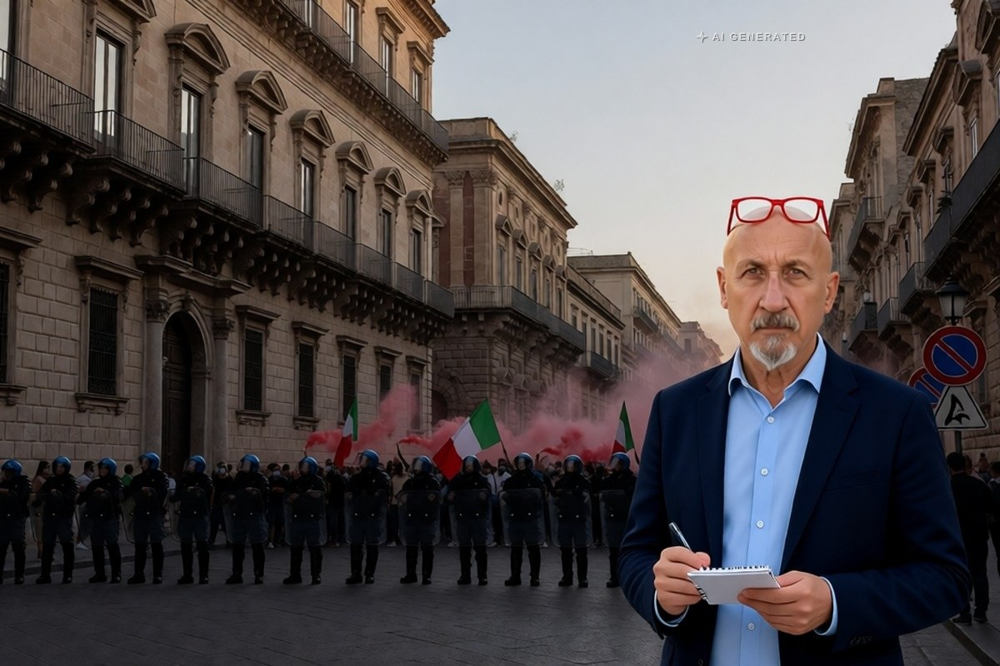

Cronaca · 1 novembre 2026
Palermo, due piazze opposte e in mezzo il cordone della polizia

Sit-in di Forza Nuova in piazza Lolli con Roberto Fiore, corteo dei centri sociali da piazza don Sturzo. Il corteo prova a deviare verso l'altra piazza: spintoni e due fumogeni, nessun ferito e nessun fermato.
di Franco Zanghì
Palermo, centro città, sabato pomeriggio. Da una parte una ventina di militanti di Forza Nuova, con il loro leader Roberto Fiore. Dall'altra una cinquantina di antagonisti dei centri sociali. In mezzo, la polizia in tenuta antisommossa.
Le due manifestazioni
Verso le 17 Forza Nuova tiene un sit-in in piazza Lolli. Il tema è il caro vita e il caro carburanti, lo striscione dice «Lotta di popolo» e il bersaglio è il governo Meloni. Nello stesso momento, da piazza don Sturzo, parte un corteo di movimenti e centri sociali, con striscioni e cori antifascisti. Il percorso concordato porta a piazza San Francesco di Paola.
Il tentativo di deviare
Secondo le cronache dei giornali locali il corteo prova a cambiare strada per arrivare a piazza Lolli, dove c'è Forza Nuova. All'angolo fra via Dante e via Villafranca trova il cordone della polizia. Due tentativi di sfondare, spintoni, urla, due fumogeni accesi, uno in via Dante e uno a San Francesco di Paola. Il cordone regge, le due piazze non si toccano, e le cronache non riportano né feriti né fermati.
Il percorso concordato è quello che gli organizzatori comunicano in questura prima della manifestazione: serve a tenere separati i cortei e a sapere in anticipo dove schierare gli agenti. Uscirne, in una giornata con due presìdi contrapposti a poche centinaia di metri, significa mettere alla prova l'unica cosa che impedisce ai due gruppi di incontrarsi.
La lettera di Cgil e Anpi
Il giorno prima, Cgil e Anpi di Palermo avevano scritto al prefetto e al questore. Non contestavano il diritto di manifestare, dicevano, ma l'opportunità che Fiore venisse in città.
Il punto
In una democrazia si manifesta, tutti, anche chi la pensa in modo opposto. Ma il diritto di manifestare non comprende quello di andare a cercare l'altra piazza. Se il cordone non avesse tenuto, oggi racconteremmo un'altra storia.
Restano due domande. Era proprio necessario mettere due piazze opposte a poche centinaia di metri? E chi ha provato a cambiare percorso sapeva dove voleva arrivare?
Fonti
- BlogSicilia, «Forza Nuova e antagonisti in piazza a Palermo, scontri e tensioni con la polizia», 31 ottobre 2026
- Quotidiano di Sicilia, «Palermo, tensioni in centro al sit-in di Forza Nuova: polizia blocca corteo antagonisti», 31 ottobre 2026
- Giornale di Sicilia, «Tensione a Palermo tra manifestanti dei centri sociali e forze di polizia», 31 ottobre 2026
- PalermoToday, «Il corteo dei centri sociali prova a deviare verso il presidio di Forza Nuova», 31 ottobre 2026
- La Sicilia, la lettera di Cgil e Anpi a prefetto e questore, 30 ottobre 2026
Nessuna fonte riporta cariche, feriti o fermati: per questo nel testo si parla di tensioni, spintoni e fumogeni e non di scontri. L'orario è quello indicato dal Quotidiano di Sicilia.